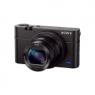

器材库 > 不可换镜头数码相机 > DSC-RX100 IV

规格总览
发布日期
2015-06-11
厂家推荐价格
949.00 （美元）
防水
否
影像规格
影像传感器
Exmor RS CMOS
影像传感器尺寸
1英寸（13.2×8.8mm）
有效像素
约2010万
静态图像格式
JPEG, RAW
静态图像尺寸
[3:2] 20M(5472×3648)/10M(3888×2592)/5.0M(2736×1824) [16:9] 17M(5472×3080)/7.5M(3648×2056)/4.2M(2720×1528) [4:3] 18M(4864×3648)/10M(3648×2736)/5.0M(2592×1944)/VGA [1:1] 13M(3648×3648)/6.5M(2544×2544)/3.7M(1920×1920)
画幅比
3:2
短片格式
AVCHD, MP4, XAVC S
短片尺寸
AVCHD:28M PS(1920×1080,50p)/24M FX(1920×1080,50i)/17M FH(1920×1080,50i)/24M FX(1920×1080,25p)/17M FH(1920×1080,25p)/ XAVC S 4K:25p 100M(3840x2160,25p)/25p 60M(3840x2160,25p)/
防抖系统
[ 静态影像 ] 光学防抖 [ 动态影像 ] 光学防抖(智能增强/增强/标准/关)
镜头和对焦
镜头结构
10片/9组
非球面镜片
9片
焦距
8.8mm-25.7mm
等效35mm画幅焦距
24mm-70mm
最大光圈
f/1.8-2.8
光学变焦
2.9倍
最近对焦距离
广角5cm, 长焦30cm
对焦模式
单次AF/连续AF/DMF/手动对焦
AF辅助灯/光
有
手动对焦
支持
曝光控制
场景模式
肖像/运动/微距/风景/黄昏/夜景/手持夜景/夜景肖像/动作防抖/宠物/美食/烟火/高感光度
快门速度
智能自动(4 秒 - 1/2000 秒)/程序自动(30 秒 - 1/2000 秒)/光圈优先(30 秒 - 1/2000 秒) / 快门优先(30 秒 - 1/2000 秒)/手动曝光(B 门,30 秒- 1/2000 秒
曝光补偿
±3EV以1/3EV级调整
ISO感光度
自动(ISO 125 - 12800,可限定上下值),125/160/200/250/320/400/500/640/800/1000/1250/1600/2000/2500/3200/4000/5000/6400/8000/10000/12800(可扩展至 ISO 80/100)多帧降噪: 自动(ISO 125 - 12800),200/400/800/1600/3200/6400/12800/25600
白平衡
自动/日光/阴影/阴天/白炽灯/荧光灯(暖白色)/荧光灯(冷白色)/荧光灯(日光白色)/荧光灯(日光)/ 闪光灯 /(色温/滤光片)/自定义/自定义设置
连拍
最快约16张/秒
拍摄模式
单张拍摄/连拍/速度优先连拍/自拍定时/自拍定时(连拍)/连续阶段曝光/单拍阶段曝光/白平衡阶段曝光/DRO阶段曝光
创意滤镜
[ 静态影像 ] 玩具相机/流行色彩/分色/复古照片/柔光亮调/局部彩色/强反差单色/柔焦/HDR绘画/丰富色调黑白/微缩景观/水彩画/插图 [ 动态影像 ] 玩具相机/流行色彩/分色/复古照片/柔光亮调/局部彩色/强反差单色
闪光灯
内置闪光灯
弹出式
闪光涵盖范围
ISO 自动模式:约0.4m到10.2m(W)/约0.4到6.5m(T); ISO 12800:可达约20.4m(W)/约13.0m(T)
取景规格
取景器
电子取景器
取景器像素
约236万
LCD类型
Xtra Fine LCD
LCD尺寸
3.0英寸
LCD像素
约123万
视野率
100%
LCD特性
翻转屏
亮度调节级数
手动(5档)/晴朗天气
文件输入/输出
存储卡
MS/MS PRO记忆棒, SD/SDHC, SDXC
数据接口
微型USB
视频/音频接口
Micro HDMI 接口
无线功能
Wi-Fi, NFC
电源
电池
锂离子电池组 NP-BX1
续航能力
[ 静态影像 ] 约280张/约140 分钟(LCD),约230张/约115 分钟(取景器)(CIPA标准)[ 动态影像 ] 约80 分钟(LCD)约 85 分钟(取景器)(CIPA标准)
外接电源
支持外接移动电源充电
外观
颜色
黑色
尺寸
101.6×58.1×41.0mm
重量
仅机身约271g / 含电池和记忆棒约298g
其它
附件
锂离子电池组 NP-BX1,电源适配器 AC-UB10C/UB10D,Micro USB 连接线,腕带,挂件适配器,使用说明书,保修卡
wanjiash2016-04-08 02:204.69 分
操作性 5.00功能性 5.00美观性 5.00趣味性 5.00耐用性 4.50性价比 4.00解像力 4.50色彩还原 4.50
产品图 / 样片
评测 / 相关文章
- 详细内容 （存档）
- ［资讯］日本选出2016最佳相机与镜头 （存档）
- ［试用］水下摄影“潜规则” 索尼RX100IV深海探秘 （存档）
- ［资讯］索尼黑卡RX100IV变身校园撩妹新神器 （存档）